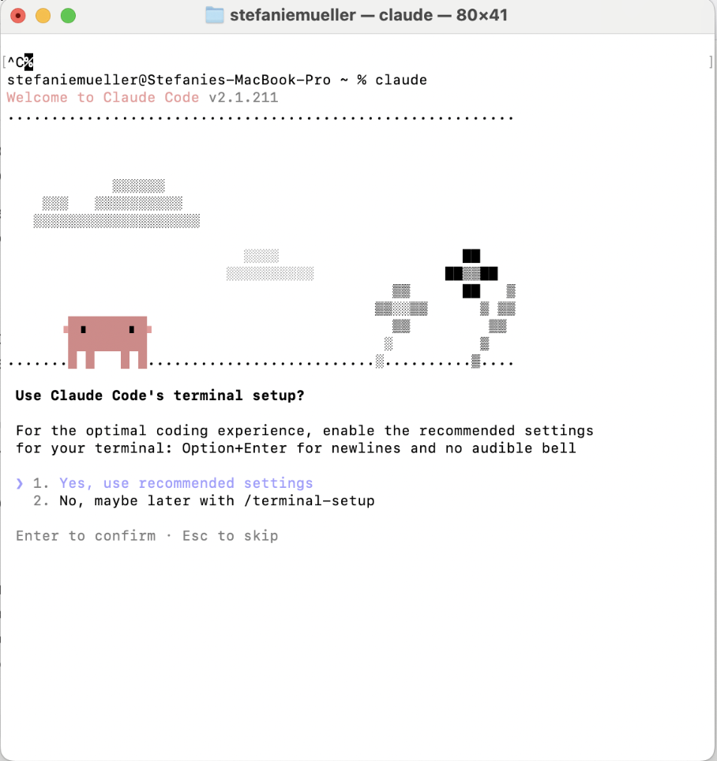
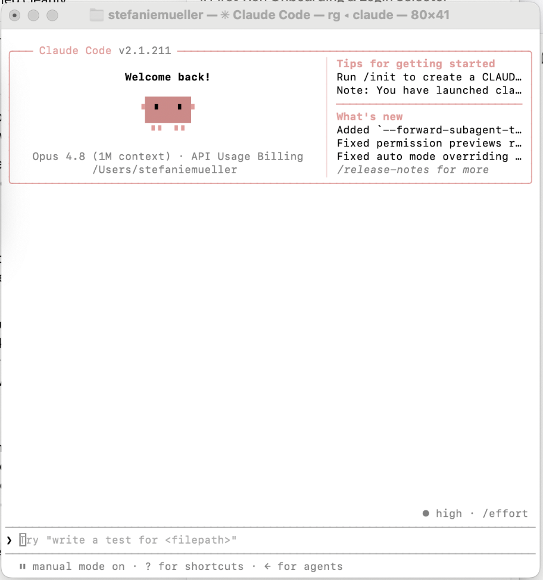
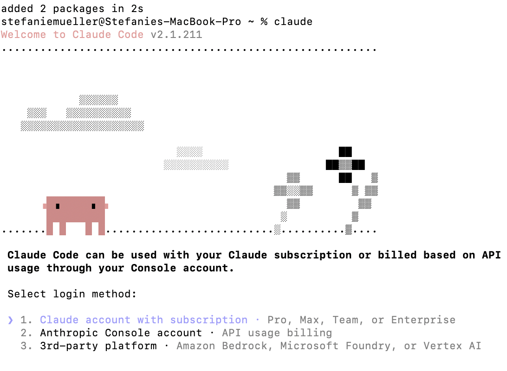
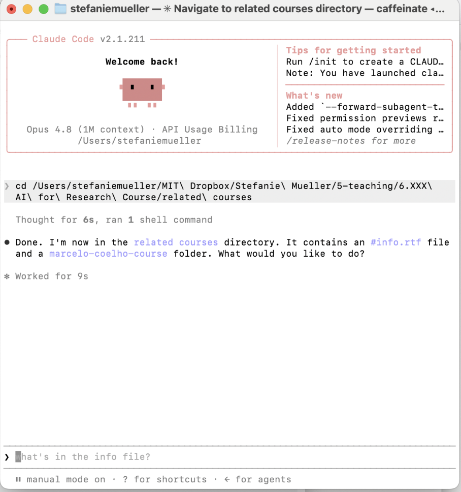
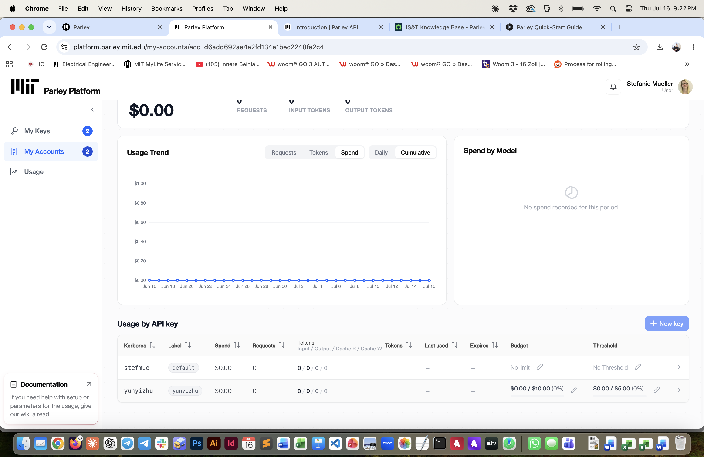

6.8500 AI-Assisted HCI Research (fall 2027)
Lab Series: Intro to MIT AI Tools
Lab1: Parley Chat and API
In this lab, you will first create the circuit drawing for your music card and then print out the circuit using conductive inkjet printing.


Steps:
Deliverables:
At the end of the lab, upload to your student google drive:- the Adobe Illustrator drawing file (combined-visual-circuit.pdf) that contains both your circuit and your visual design on two separate layers
- the two individual pdfs (circuit-design.pdf and visual-design.pdf) you used for printing
- two photos showing the front and back of your inkjet printed card
Before you start
Sign-Up Spreadsheet: Don't forget to fill out the 6.810 sign up spreadsheet to enroll in class.
Join 6.810 Slack Workspace: To join the 6.810 workspace, first click here and sign in with your kerberos. On the following page, type in 'mit-6810-2021', which should show the 6.810 class workspace. Join the workspace. We recommend you install the slack desktop app and access the workspace from there.
Join Slack Channels for 'Lab01' and your table number, e.g. 'Table1': When you join slack, the channels are not yet visible to you. You need to click on the little '+' next to the 'Channels' side bar and then 'browse channels' to see all channels. For now it's enough to join the 'Lab01' slack channel (for general announcement related to the lab) and your respective table's slack channel, e.g. 'Table1' (for asking for TA/LA help and sharing info with other students at your table).
Now that we have the logistics out of the way, let's get started with the actual lab.Join Slack Channels for 'Lab01' and your table number, e.g. 'Table1': When you join slack, the channels are not yet visible to you. You need to click on the little '+' next to the 'Channels' side bar and then 'browse channels' to see all channels. For now it's enough to join the 'Lab01' slack channel (for general announcement related to the lab) and your respective table's slack channel, e.g. 'Table1' (for asking for TA/LA help and sharing info with other students at your table).
Token Use
We have $30 a month for the chat interface (and a seperate $30 a month for the API interface).(1) Model Choice
For testing today, we are going to use Lllama 4 Maverick 17B because it is free.Parley Chat
(1) Set Model to Llama 4
Before doing anything, set the model to Llama 4.Parley API
We have $30 a month for the API interface.
(1) Get your Parley API key
Go to parley.mit.edu, sign in with your MIT Kerberos credentials, and click "Parley API" in the top-right corner. This is where you generate your API key and should also find your personal endpoint URL. Note both down.(2) Install Claude Code
Open your terminal, then install claude code with:npm install -g @anthropic-ai/claude-code
(3) Point Claude Code at Parley
Claude Code talks to Anthropic's servers by default.Two environment variables redirect it to Parley instead:
export ANTHROPIC_API_KEY="your-parley-api-key
export ANTHROPIC_BASE_URL="https://parley.mit.edu/api"
The ANTHROPIC_BASE_URL: the actual value will be in your Parley API dashboard.
To make these permanent (so you don't have to export them every session), add them to your ~/.claude/settings.json:
open ~/.claude/settings.json
{
"env": {
"ANTHROPIC_API_KEY": "your-parley-api-key",
"ANTHROPIC_BASE_URL": "https://parley.mit.edu/api"
}
}
(4) Start Claude
Navigate to a folder with some files — say, a paper you're working on and start claude.
cd ~/my-research-folder
claude
This will trigger the start up assistant from claude when done for the first time.
Select the display style you like to use, then hit enter, this should start the claude command.


If you are asked to select a usage model your parley key didn't properly install. Ask a TA for help.

(5) Set Model to Llama 4
Before doing anything, set the model to Llama 4./model Llama4 //check what to write here
(6) Try a Simple Example
Once the model is confirmed as Llama 4, try the following:
> summarize the key arguments in paper.pdf
> what are the gaps in the literature based on these three papers?
> suggest a methods section outline given these notes

(5) Check Token Use
Parley API only gives you a certain amount of tokens per month.Check your token use on the Parley API dashboard, it should still say 0 (if not the Llama 4 model is not used).

AI Workflows
- for work, I use the Claude add-on for VS code so I can see all files it generates and references. I read the MD files with Obsidian, and put my comments in brackets to use as localized input for the next iteration.- for conversational tasks/mobile working, I use the chat interface.
Deliverables:
At the end of the lab, upload to your student google drive:- the Adobe Illustrator drawing file (.pdf) that contains both your circuit and your visual design on two separate layers
- the two individual pdfs (circuit_design.pdf and visual_design.pdf) you used for printing
- two photos showing the front and back of your inkjet printed card
What's next?: If you have time left, we recommend you either (1) do the safety trainings that were listed at the beginning of the lab, or (2) go to Lab 2 and start installing Arduino, the ESP core etc. and pick up your hardware bag from the teaching team (please only do this if you are confident you will stay in the class), or (3) create your laser cut business card homework.